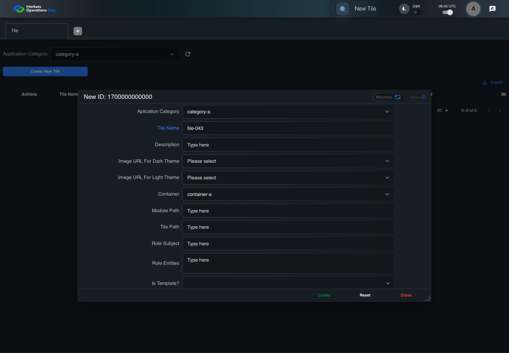
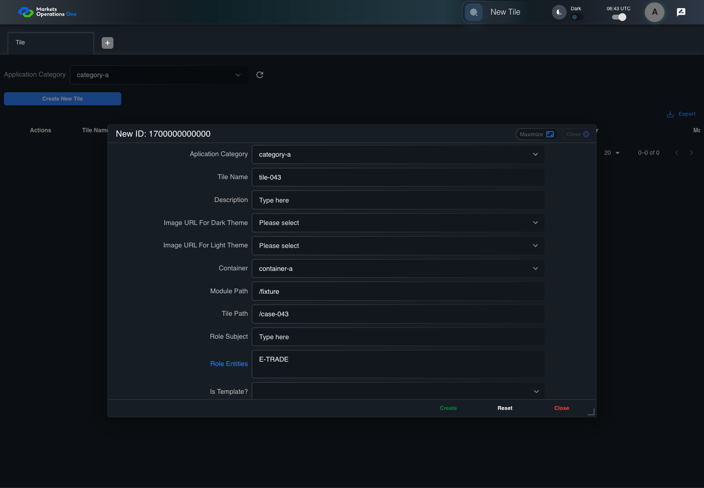
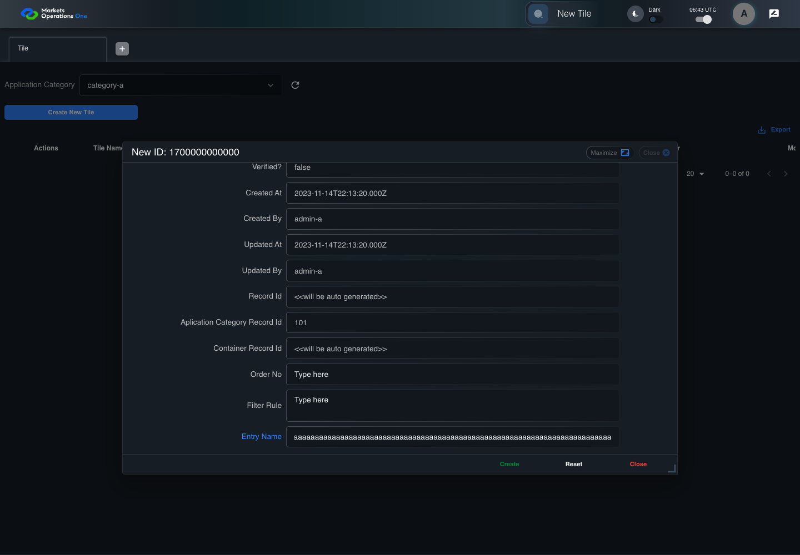
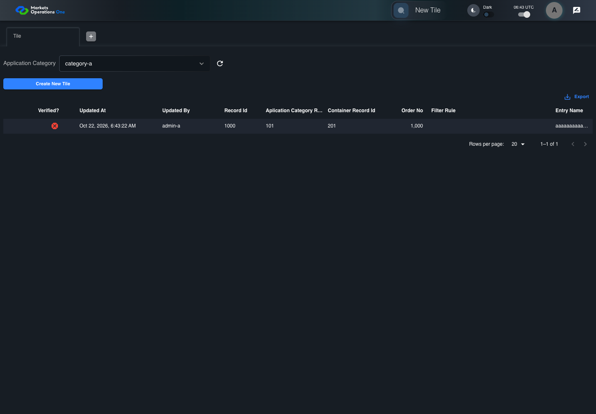

BFF-ADM-043 current BFF administration through actual UI
PASS · application/run-072/bff-adm-043-current-bff-administration-through-actual-ui-49af696cabd8-attempt-1 · ACTUAL_APPLICATION_LOCAL_SERVICES
Actual current React and exact-current BFF admin controllers/services/JPA with actual migration DDL in disposable PostgreSQL. Controlled OUD/EMS2 identities and local Spring bootstrap. Fixture SQL seeds/mutates isolated records; service errors are actual database errors. Undefined agreed messages remain unresolved acceptance.
2026-10-22T06:43:14.877Z to 2026-10-22T06:43:23.482Z
Assertions and result · Artifact manifest · Exact run inputs and source hashes
Result SHA-256:07bb131bedbbe5e28bf7e6fe1dd45872e4b4fa149fd1810d7cd681a47d22c02dMachine observations
- actual-identity-projection.json
9ce80b0817d2b9857c2e2ecaa3104534091fa46db38531e84fba021e63692bfb - actual-migration-schema.json
c3cec67553f0d97056447a5e7d982f9a61fa6270ec81e7c25c3c369f944814af - baseline-inputs.json
3b500dfdc4223a96055ee7d2e2c7f244488600662a657101e4843c2cccf14d7f - bff-boundary.json
91cceca01860cdb085425a7887546214b336865e330a338b105aaf12b6b1bcd1 - committed-ui-submission-comparisons.json
1b08fc5059a43eeb532a2e8ddf8f11090f7094af93fd5b870d37f09f21e401c5 - creation-clock.json
7d9d0aac3da44c6724d455cf04be51c09377cf4f30c413259d2af1bf8dbd0527 - empty-filter-rule-representation.json
e6e19c20c8ad52dd6c5b9b0a892584f81fb525415e96dca28f21507c8288a333 - fixture-step-10.json
9d55d990f64ed6eefc8dc69da73aca1e4f8fede906baef480e98bea1bc6113ac - fixture-step-11.json
31e798d41434307db3e1fa4483476945ea2cbf332a594b26e8b2a7911c3a9aa3 - fixture-step-6.json
aa19ee992797ff46328e33ef3c74f6ed100bc33a93a4670469551c7e6f876cc5 - fixture-step-7.json
376c413e2ab40e8e469da1be7bca66b364d03e68a8068e8c942da5087420fd60 - fixture-step-8.json
821b41fdfd1b760ad574f7409a3d0e449f6abb5a259011b463a10e4d0760518c - fixture-step-9.json
e8df6c0586af201e4012975079648938c9ee82a749bbb91429b19aee9d8306a3 - initial-persisted-records.json
21bf7c92c0d5ff18915b419f9b9ea490641d1ae8310a2cfc160cb71413094672 - persisted-after-submit.json
cf9dbb08e2b46762d5ff9409ae9c0bbfd26fd8d57afc4748372014870853dcfa - reference-snapshot-3.json
d071bef9bc1224d06acafeee9cc8081b3d776a651fdedb4e878f709a46e60632 - reference-snapshot-4.json
9d744e0e05d72fa1b35b3d14a5cdc351b9fb659a35e1674ae07af25cd58334b9 - ui-origin-bff-requests.json
ad4335b8cf87c19edcb688a41c6bd98ddcd9229508cf0d58523c216c2702301c
Screenshot capture: CAPTURED. Named frames: 27.
Step screenshot bindings: COMPLETE. 26/26 canonical steps have execution screenshots.
Bindings measure structural coverage only. They do not establish screenshot content quality or relevance.
Screenshot content review: NOT_REVIEWED. Recorded context: 0/27 frames. Identical image bytes: 0 repeated frames. Recorded context does not establish human visual review.
Canonical step timeline
Given Admin A uses subject "admin-a" with role "FMO_ADMIN" in an isolated authenticated browser
Execution: PASSED.
1. step-01 Visible state after step 1: Given Admin A uses subject "admin-a" with role "FMO_ADMIN" in an isolated authenticated browser
2026-10-22T06:43:17.551Z · 1440×1000
Step: /Users/lushevol/code/github/ratan-release-impact/workbench/tasks/ui-test-coverage-20261022/test-cases.md:16530
SHA-256:dfdc4d9f87a154c4ae46684579c40a6bd70acad870e9b4d0e2d80afa36fd4e6cAnd the controlled Tile fixture records the initial grid rows and persisted values
Execution: PASSED.
2. step-02 Visible state after step 2: And the controlled Tile fixture records the initial grid rows and persisted values
2026-10-22T06:43:17.693Z · 1440×1000
Step: /Users/lushevol/code/github/ratan-release-impact/workbench/tasks/ui-test-coverage-20261022/test-cases.md:16531
SHA-256:5fea6524825cb12fe898c7a82a100ec1bf216016ff848d7bbd02127981d9c5d7And Category 101 has label "category-a" and Import Map 201 has Module Name "container-a"
Execution: PASSED.
3. step-03 Visible state after step 3: And Category 101 has label "category-a" and Import Map 201 has Module Name "container-a"
2026-10-22T06:43:17.761Z · 1440×1000
Step: /Users/lushevol/code/github/ratan-release-impact/workbench/tasks/ui-test-coverage-20261022/test-cases.md:16532
SHA-256:feab2e28aaf87d2ba40315b11ddb560b8914f565bf5aabd61984e60e8224458aAnd both references belong to "FMO_ADMIN" and the Tile page category filter value is Category 101
Execution: PASSED.
4. step-04 Visible state after step 4: And both references belong to "FMO_ADMIN" and the Tile page category filter value is Category 101
2026-10-22T06:43:17.826Z · 1440×1000
Step: /Users/lushevol/code/github/ratan-release-impact/workbench/tasks/ui-test-coverage-20261022/test-cases.md:16533
SHA-256:175fe539e6185b8c5cdb73c65f80a1c70718919fe475aeba9f3c45c45bef3a95And the controlled creation clock returns 1700000000000 milliseconds
Execution: PASSED.
5. step-05 Visible state after step 5: And the controlled creation clock returns 1700000000000 milliseconds
2026-10-22T06:43:17.876Z · 1440×1000
Step: /Users/lushevol/code/github/ratan-release-impact/workbench/tasks/ui-test-coverage-20261022/test-cases.md:16534
SHA-256:7c9c17d649d7178d70791dad9956a9d37a861ca6d5b90fafb47659d2f38c9b2cAnd the baseline fixture data defines "Tile Name" as "tile-043"
Execution: PASSED.
6. step-06 Visible state after step 6: And the baseline fixture data defines "Tile Name" as "tile-043"
2026-10-22T06:43:17.922Z · 1440×1000
Step: /Users/lushevol/code/github/ratan-release-impact/workbench/tasks/ui-test-coverage-20261022/test-cases.md:16535
SHA-256:fcdf481d1e897dbdfd3114bceb58d9a63d7a467ecb9be62a989cffef4be10f30And the baseline fixture data defines "Module Path" as "/fixture"
Execution: PASSED.
7. step-07 Visible state after step 7: And the baseline fixture data defines "Module Path" as "/fixture"
2026-10-22T06:43:17.973Z · 1440×1000
Step: /Users/lushevol/code/github/ratan-release-impact/workbench/tasks/ui-test-coverage-20261022/test-cases.md:16536
SHA-256:b63bad2c3b152793bb52080c4d159f322c8e50f143b7c1c55ee21e79fdeca9cdAnd the baseline fixture data defines "Tile Path" as "/case-043"
Execution: PASSED.
8. step-08 Visible state after step 8: And the baseline fixture data defines "Tile Path" as "/case-043"
2026-10-22T06:43:18.023Z · 1440×1000
Step: /Users/lushevol/code/github/ratan-release-impact/workbench/tasks/ui-test-coverage-20261022/test-cases.md:16537
SHA-256:4df340404ed6f9092d29c9d6680437d2a054e04705263024b28a8bdac9c68485And the baseline fixture data defines "Role Entities" as "E-TRADE"
Execution: PASSED.
9. step-09 Visible state after step 9: And the baseline fixture data defines "Role Entities" as "E-TRADE"
2026-10-22T06:43:18.074Z · 1440×1000
Step: /Users/lushevol/code/github/ratan-release-impact/workbench/tasks/ui-test-coverage-20261022/test-cases.md:16538
SHA-256:89690475654f20f037d8fe3ace42553097d352cdc8c8aa4208528000315d498dAnd the baseline fixture data defines "Filter Rule" as ""
Execution: PASSED.
10. step-10 Visible state after step 10: And the baseline fixture data defines "Filter Rule" as ""
2026-10-22T06:43:18.126Z · 1440×1000
Step: /Users/lushevol/code/github/ratan-release-impact/workbench/tasks/ui-test-coverage-20261022/test-cases.md:16539
SHA-256:c715773ff3181223a90a92d361cb9618b0cb8ddc8b279cbee165844778f93be6And the baseline Tile references use "Aplication Category" "category-a" and "Container" "container-a"
Execution: PASSED.
11. step-11 Visible state after step 11: And the baseline Tile references use "Aplication Category" "category-a" and "Container" "container-a"
2026-10-22T06:43:18.170Z · 1440×1000
Step: /Users/lushevol/code/github/ratan-release-impact/workbench/tasks/ui-test-coverage-20261022/test-cases.md:16540
SHA-256:606003729659672aa6194f76fe854ec0e0b6a1f17ac031c6010572a6d4d13f1bAnd the prepared database uses the inspected migration DDL and reports its applied schema revision
Execution: PASSED.
12. step-12 Visible state after step 12: And the prepared database uses the inspected migration DDL and reports its applied schema revision
2026-10-22T06:43:18.219Z · 1440×1000
Step: /Users/lushevol/code/github/ratan-release-impact/workbench/tasks/ui-test-coverage-20261022/test-cases.md:16541
SHA-256:1f1a0ac93ee9716320442b4d00acd34466b550a1ae66fb853eaafb255936713fWhen Admin A clicks the button labeled "Create New Tile" on the Tile administration page
Execution: PASSED.
13. step-13 Visible state after step 13: When Admin A clicks the button labeled "Create New Tile" on the Tile administration page
2026-10-22T06:43:18.502Z · 1440×1000
Step: /Users/lushevol/code/github/ratan-release-impact/workbench/tasks/ui-test-coverage-20261022/test-cases.md:16542
SHA-256:7f97526681ad091d45b786c082a89f27080feb50a4f315810adffe7c3276826eThen the dialog titled "new ID: 1700000000000" is visible on the Tile administration page
Execution: PASSED.14. step-14 Visible state after step 14: Then the dialog titled "new ID: 1700000000000" is visible on the Tile administration page
2026-10-22T06:43:18.599Z · 1440×1000
Step: /Users/lushevol/code/github/ratan-release-impact/workbench/tasks/ui-test-coverage-20261022/test-cases.md:16543
SHA-256:b1044c943d35e2957a40a38b2ca1e74cb4701b089490434fb69198e59c97707bWhen Admin A clicks the combobox labeled "Container" in dialog "new ID: 1700000000000"
Execution: PASSED.15. step-15 Visible state after step 15: When Admin A clicks the combobox labeled "Container" in dialog "new ID: 1700000000000"
2026-10-22T06:43:19.066Z · 1440×1000
Step: /Users/lushevol/code/github/ratan-release-impact/workbench/tasks/ui-test-coverage-20261022/test-cases.md:16544
SHA-256:59f74529704a57c4105b137083d0b7ee7bc5eea53858c1f6f445f5bc0052a353And Admin A clicks the option labeled "container-a" in the expanded "Container" listbox for dialog "new ID: 1700000000000"
Execution: PASSED.
16. step-16 Visible state after step 16: And Admin A clicks the option labeled "container-a" in the expanded "Container" listbox for dialog "new ID: 1700000000000"
2026-10-22T06:43:19.613Z · 1440×1000
Step: /Users/lushevol/code/github/ratan-release-impact/workbench/tasks/ui-test-coverage-20261022/test-cases.md:16545
SHA-256:67bd6ba94c258185007e8ace01525a3a47fca56c992338dd0edf75053505dbb4And Admin A fills the textbox labeled "Tile Name" with "tile-043" in dialog "new ID: 1700000000000"
Execution: PASSED.
17. step-17 Visible state after step 17: And Admin A fills the textbox labeled "Tile Name" with "tile-043" in dialog "new ID: 1700000000000"
2026-10-22T06:43:20.041Z · 1440×1000
Step: /Users/lushevol/code/github/ratan-release-impact/workbench/tasks/ui-test-coverage-20261022/test-cases.md:16546
SHA-256:f057114fb9a8b67636a31ed272c0db55b87a1d9e26d98dc2c8013bc617579678And Admin A fills the textbox labeled "Module Path" with "/fixture" in dialog "new ID: 1700000000000"
Execution: PASSED.18. step-18 Visible state after step 18: And Admin A fills the textbox labeled "Module Path" with "/fixture" in dialog "new ID: 1700000000000"
2026-10-22T06:43:20.498Z · 1440×1000
Step: /Users/lushevol/code/github/ratan-release-impact/workbench/tasks/ui-test-coverage-20261022/test-cases.md:16547
SHA-256:fe510a0fc93f14cd7d0e647d64f097b8f35506edd814381e3a11e9d1e7dda2d1And Admin A fills the textbox labeled "Tile Path" with "/case-043" in dialog "new ID: 1700000000000"
Execution: PASSED.19. step-19 Visible state after step 19: And Admin A fills the textbox labeled "Tile Path" with "/case-043" in dialog "new ID: 1700000000000"
2026-10-22T06:43:20.959Z · 1440×1000
Step: /Users/lushevol/code/github/ratan-release-impact/workbench/tasks/ui-test-coverage-20261022/test-cases.md:16548
SHA-256:851182576597b96d65943499a65534cd85073a4b2bed03039f76af83967a6736And Admin A fills the textarea labeled "Role Entities" with "E-TRADE" in dialog "new ID: 1700000000000"
Execution: PASSED.
20. step-20 Visible state after step 20: And Admin A fills the textarea labeled "Role Entities" with "E-TRADE" in dialog "new ID: 1700000000000"
2026-10-22T06:43:21.393Z · 1440×1000
Step: /Users/lushevol/code/github/ratan-release-impact/workbench/tasks/ui-test-coverage-20261022/test-cases.md:16549
SHA-256:b6bb385512c39733ba12d9c941727562702ccf56f8f99d751659108eec500173And Admin A fills the textarea labeled "Filter Rule" with "" in dialog "new ID: 1700000000000"
Execution: PASSED.
21. step-21 Visible state after step 21: And Admin A fills the textarea labeled "Filter Rule" with "" in dialog "new ID: 1700000000000"
2026-10-22T06:43:21.824Z · 1440×1000
Step: /Users/lushevol/code/github/ratan-release-impact/workbench/tasks/ui-test-coverage-20261022/test-cases.md:16550
SHA-256:b88681761a0908e79f84047dd5b2ad88c08fa5f8828380ff199e032a4c08acc5And Admin A fills the textbox labeled "Entry Name" with exactly 255 ASCII "a" characters in dialog "new ID: 1700000000000"
Execution: PASSED.
22. step-22 Visible state after step 22: And Admin A fills the textbox labeled "Entry Name" with exactly 255 ASCII "a" characters in dialog "new ID: 1700000000000"
2026-10-22T06:43:22.265Z · 1440×1000
Step: /Users/lushevol/code/github/ratan-release-impact/workbench/tasks/ui-test-coverage-20261022/test-cases.md:16551
SHA-256:97d909a36466f5f97d8b895a7904df5fa2dd57449572a86280c8dc605f92a4efAnd Admin A clicks the button labeled "Create" in dialog "new ID: 1700000000000"
Execution: PASSED.23. step-23 Visible state after step 23: And Admin A clicks the button labeled "Create" in dialog "new ID: 1700000000000"
2026-10-22T06:43:22.467Z · 1440×1000
Step: /Users/lushevol/code/github/ratan-release-impact/workbench/tasks/ui-test-coverage-20261022/test-cases.md:16552
SHA-256:5bb1bfba8a255d17dd1f08e427d747f9469dd73d3917b7bb129725c42c78d8d3Then the Tile data grid with column "Record Id" contains exactly one row with the create response Record Id on the Tile administration page
Execution: PASSED.24. step-24 Visible state after step 24: Then the Tile data grid with column "Record Id" contains exactly one row with the create response Record Id on the Tile administration page
2026-10-22T06:43:22.501Z · 1440×1000
Step: /Users/lushevol/code/github/ratan-release-impact/workbench/tasks/ui-test-coverage-20261022/test-cases.md:16553
SHA-256:413811e30ae23753eef76089d544b1bda398721abd4a4272fd12e9ada798c9d1And in the Tile data grid with column "Record Id", its "Entry Name" cell equals the submitted value without truncation on the Tile administration page
Execution: PASSED.25. step-25 Visible state after step 25: And in the Tile data grid with column "Record Id", its "Entry Name" cell equals the submitted value without truncation on the Tile administration page
2026-10-22T06:43:22.752Z · 1440×1000
Step: /Users/lushevol/code/github/ratan-release-impact/workbench/tasks/ui-test-coverage-20261022/test-cases.md:16554
SHA-256:e53c6f85b1a609f423d888c97ebfe540ace9ee0a6f0b4792c4562cd10b00ecabAnd the independent persisted-record readback contains exactly 255 ASCII "a" characters in "Entry Name"
Execution: PASSED.
26. step-26 Visible state after step 26: And the independent persisted-record readback contains exactly 255 ASCII "a" characters in "Entry Name"
2026-10-22T06:43:22.804Z · 1440×1000
Step: /Users/lushevol/code/github/ratan-release-impact/workbench/tasks/ui-test-coverage-20261022/test-cases.md:16555
SHA-256:181f06ea9e917dab738cdca5785d57d948f0028a931656ff363b8cc95c8a59cc
Additional named frames
Screenshots establish visible state only. Assertions and traces support functional claims.